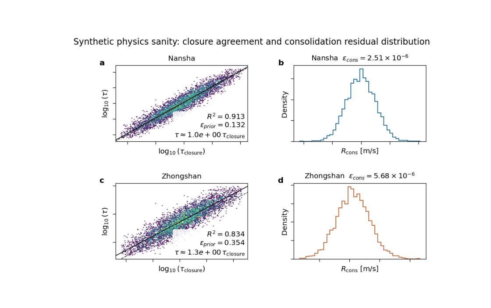

Note
Go to the end to download the full example code.
Physics sanity: checking closure agreement and residual behavior#
This example teaches you how to read the GeoPrior physics-sanity figure.
Unlike a map-based figure, this page is not mainly about where things happen in space. It is about whether the inferred physics looks self-consistent.
The figure asks two practical questions for each city:
Does the learned relaxation timescale \(\tau\) broadly agree with the prior or closure timescale?
Are the consolidation residuals \(R_{\mathrm{cons}}\) centered and reasonably controlled, or do they show strong drift and spread?
This makes the figure useful as a compact sanity check between field inference and residual behavior.
What the figure contains#
The plotting backend builds a 2×2 layout for exactly two cases.
For each city:
the left panel compares \(\tau\) and \(\tau_{\mathrm{prior}}\) (or \(\tau_{\mathrm{closure}}\) depending on metadata),
the right panel shows the distribution of the consolidation residual \(R_{\mathrm{cons}}\).
The backend also computes summary metrics such as:
r2_logtaueps_prior_rmseps_cons_rmstau_ratio_median
Why this matters#
A model can produce plausible-looking forecasts while still learning a physically awkward internal state.
This figure helps you answer questions like:
Is the learned \(\tau\) mostly tracking the closure-based timescale, or drifting away from it?
Are the consolidation residuals tightly concentrated near zero, or broad and biased?
Is one city physically cleaner than the other?
In other words, this is a figure for trust calibration.
This gallery page uses two synthetic cities so the lesson is fully executable during the documentation build.
Imports#
We use the real physics-sanity backend from the project code. The gallery page therefore teaches the real plotting engine.
from __future__ import annotations
import tempfile
from pathlib import Path
import matplotlib.image as mpimg
import matplotlib.pyplot as plt
import numpy as np
from geoprior._scripts.plot_physics_sanity import (
render_physics_sanity,
)
Step 1 - Build a synthetic domain#
Even though this figure is not a map, we still synthesize physically meaningful arrays for two city-scale cases.
Each case needs:
tau
tau_prior
K
Ss
Hd
cons
where cons is the consolidation residual series used for
the histogram panel.
n = 6000
rng = np.random.default_rng(42)
Step 2 - Create the first city#
City A is designed to be the “better behaved” case:
tau is close to tau_prior,
the log-space agreement is strong,
and residuals are narrow and centered near zero.
lp_a = rng.normal(loc=0.18, scale=0.18, size=n)
tau_prior_a = 10.0 ** lp_a
tau_a = tau_prior_a * (
10.0 ** rng.normal(loc=0.015, scale=0.055, size=n)
)
K_a = 10.0 ** rng.normal(loc=-5.8, scale=0.18, size=n)
Ss_a = 10.0 ** rng.normal(loc=-4.7, scale=0.12, size=n)
Hd_a = np.clip(
rng.normal(loc=20.0, scale=2.0, size=n),
12.0,
None,
)
cons_a = rng.normal(loc=0.0, scale=2.5e-6, size=n)
meta_a = {
"units": {
"K": "m/s",
"Ss": "1/m",
"Hd": "m",
"tau": "s",
"tau_prior": "s",
"cons_res_vals": "m/s",
},
"tau_prior_human_name": "tau_closure",
"tau_closure_formula": (
r"\frac{H_d^2\,S_s}{\pi^2\,\kappa_b\,K}"
),
}
case_a = {
"city": "Nansha",
"color": "#2a6f97",
"path": Path("synthetic_nansha_physics_payload.npz"),
"meta": meta_a,
"payload": {},
"tau": tau_a,
"tau_prior": tau_prior_a,
"K": K_a,
"Ss": Ss_a,
"Hd": Hd_a,
"cons": cons_a,
}
Step 3 - Create the second city#
City B is intentionally less aligned:
tau departs more strongly from tau_prior,
the agreement cloud is broader,
and the consolidation residuals are wider and slightly biased.
This gives the lesson a useful contrast.
lp_b = rng.normal(loc=0.28, scale=0.24, size=n)
tau_prior_b = 10.0 ** lp_b
tau_b = tau_prior_b * (
10.0 ** rng.normal(loc=0.11, scale=0.11, size=n)
)
K_b = 10.0 ** rng.normal(loc=-5.5, scale=0.24, size=n)
Ss_b = 10.0 ** rng.normal(loc=-4.5, scale=0.16, size=n)
Hd_b = np.clip(
rng.normal(loc=24.0, scale=3.0, size=n),
12.0,
None,
)
cons_b = rng.normal(loc=1.2e-6, scale=5.5e-6, size=n)
meta_b = {
"units": {
"K": "m/s",
"Ss": "1/m",
"Hd": "m",
"tau": "s",
"tau_prior": "s",
"cons_res_vals": "m/s",
},
"tau_prior_human_name": "tau_closure",
"tau_closure_formula": (
r"\frac{H_d^2\,S_s}{\pi^2\,\kappa_b\,K}"
),
}
case_b = {
"city": "Zhongshan",
"color": "#c26d3d",
"path": Path("synthetic_zhongshan_physics_payload.npz"),
"meta": meta_b,
"payload": {},
"tau": tau_b,
"tau_prior": tau_prior_b,
"K": K_b,
"Ss": Ss_b,
"Hd": Hd_b,
"cons": cons_b,
}
cases = [case_a, case_b]
Step 4 - Render the figure#
We use the real plotting backend. In plot_mode="joint",
the left panels compare tau and tau_prior directly. The right
panels show the distribution of R_cons.
The helper saves the figure and returns the summary statistics.
tmp_dir = Path(
tempfile.mkdtemp(prefix="gp_sg_sanity_")
)
out_base = tmp_dir / "physics_sanity_gallery"
stats = render_physics_sanity(
cases,
outbase=out_base,
dpi=160,
fontsize=9,
gridsize=120,
hist_bins=40,
clip_q=(1.0, 99.0),
plot_mode="joint",
tau_scale="log10",
show_labels=True,
show_title=True,
show_panel_titles=True,
show_panel_labels=True,
show_ticklabels=False,
show_legend=False,
title=(
"Synthetic physics sanity: closure agreement and "
"consolidation residual distribution"
),
paper_format=True,
paper_no_offset=False,
)
[OK] wrote C:\Users\Daniel\AppData\Local\Temp\gp_sg_sanity_0f04q6uv\physics_sanity_gallery (eps,pdf,png,svg)
Step 5 - Show the saved figure inside the gallery page#
The backend writes .png and .svg outputs. We load the
PNG back into a small display figure so Sphinx-Gallery always
has a visible rendered result on the page.
img = mpimg.imread(str(out_base) + ".png")
fig, ax = plt.subplots(figsize=(7.0, 4.4))
ax.imshow(img)
ax.axis("off")

(np.float64(-0.5), np.float64(1002.5), np.float64(664.5), np.float64(-0.5))
Step 6 - Inspect the numerical summary#
The backend returns one dictionary per city. These values help turn the visual impression into a more explicit diagnostic.
Summary statistics
Nansha
r2_logtau = 0.9135
eps_prior_rms = 1.3165e-01
eps_cons_rms = 2.5058e-06
tau_ratio_med = 1.0296
Zhongshan
r2_logtau = 0.8339
eps_prior_rms = 3.5445e-01
eps_cons_rms = 5.6771e-06
tau_ratio_med = 1.2799
Step 7 - Add one simple interpretation helper#
A useful teaching trick is to compare the two cities directly. We summarize which city is more closure-aligned and which one has the tighter residual distribution.
city_names = list(stats)
best_r2_city = max(
city_names,
key=lambda c: stats[c]["r2_logtau"],
)
best_cons_city = min(
city_names,
key=lambda c: stats[c]["eps_cons_rms"],
)
print("")
print("Interpretation helper")
print(
f" Stronger tau/tau_prior agreement: {best_r2_city}"
)
print(
f" Tighter consolidation residuals: {best_cons_city}"
)
Interpretation helper
Stronger tau/tau_prior agreement: Nansha
Tighter consolidation residuals: Nansha
How to read the figure#
Let us read the page like a scientific user.
Left panels#
These panels compare the learned timescale against the closure timescale. In joint mode, points clustering near the 1:1 line indicate broad agreement.
A high r2_logtau means the model is preserving the rank
structure of the closure-based timescale rather well. A median
tau ratio near 1 means the learned field is not strongly biased
upward or downward relative to the prior.
Right panels#
These panels show the distribution of \(R_{\\mathrm{cons}}\).
Ideally, the distribution should be fairly concentrated and not
strongly shifted away from zero. A broader distribution usually
means the consolidation closure is under more strain. The
reported eps_cons_rms gives a compact measure of that spread.
What this synthetic example teaches#
In this lesson, Nansha was built to be the more physically consistent case, while Zhongshan was built to be noisier and slightly biased.
You should therefore see:
a tighter left-panel agreement cloud for Nansha,
a narrower residual histogram for Nansha,
and larger prior / residual error metrics for Zhongshan.
In a real run, this kind of contrast helps you decide whether a city-level physics payload looks credible enough to support stronger scientific interpretation.
Practical takeaway#
This figure is most valuable when you use it early, not only at the end of a paper workflow.
It helps answer:
Are my learned timescales staying close to the closure?
Are my consolidation residuals under control?
Is one city behaving much worse than another?
That is why this is a “sanity” figure: it is compact, fast to inspect, and highly diagnostic.
Command-line version#
The same plotting backend can be used from the CLI with two
payload sources. The current script expects exactly two cases,
accepts --src twice, and supports options such as
--plot-mode, --tau-scale, --cons-kind,
--gridsize, --hist-bins, --clip-q,
--subsample-frac, --max-points, --out-json, and
optional extras like k-from-tau and closure.
Through the current legacy dispatcher:
python -m scripts plot-physics-sanity \
--src results/ns_run_dir \
--src results/zh_run_dir \
--plot-mode joint \
--tau-scale log10 \
--cons-kind raw \
--clip-q 1 99 \
--out fig4_physics_sanity \
--out-json fig4_physics_sanity.json
If city names are not inferable from the paths:
python -m scripts plot-physics-sanity \
--src some/runA \
--src some/runB \
--city Nansha \
--city Zhongshan \
--extra k-from-tau,closure \
--out fig4_physics_sanity
And through the modern command family:
geoprior plot physics-sanity \
--src results/ns_run_dir \
--src results/zh_run_dir \
--out fig4_physics_sanity
The gallery page teaches the figure. The CLI reproduces it in a workflow.
Total running time of the script: (0 minutes 20.262 seconds)